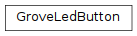

grove.grove_ryb_led_button¶
- This is the code for
Examples
from grove.button import Button
import grove.grove_ryb_led_button.GroveLedButton
# slot/gpio number your device plugin
pin = 12
obj = GroveLedButton(pin)
# the default behavior of led is
# single click - on
# double click - blink
# long press - off
# remove ''' pairs below to begin your experiment
'''
# define a customized event handle your self
def cust_on_event(index, event, tm):
# obj.led could be used to operate led
print("event with code {}, time {}".format(event, tm))
obj.on_event = cust_on_event
'''
while True:
time.sleep(1)
Classes¶
GroveLedButton: Grove Red/Yellow/Blue Led Button class
Grove Red/Yellow/Blue Led Button class
all of them has a gpio button with low valid level of pressing, and a gpio led with high valid level for lighting.
Parameters: pin (int) – the gpio number your grove device plugin Inheritance
- Argument
- callback – a callable function/object,
- will be called when there is button event
- callback prototype:
- callback(index, code, time)
- callback argument:
- Args:
index(int): button index, be in 0 to [button count - 1]
- code (int): bits combination of
- Button.EV_SINGLE_CLICK
- Button.EV_DOUBLE_CLICK
- Button.EV_LONG_PRESS
time(time): event generation time
Returns: none
Examples
set
obj.on_event = callback
get
callobj = obj.on_event